ЗАГОЛОВКИ / DELA GOTHIC ONE
ХАРАКТЕР
В КАЖДОЙ БУКВЕ.
Плотный выразительный шрифт задаёт ритм и превращает короткие фразы в самостоятельные акценты.
MOCHI MOOD · ЯПОНСКИЕ ДЕСЕРТЫ
Как превратить знакомство с десертом
в маленькое эмоциональное приключение.
01 / ИДЕЯ И ЗАДАЧА
MOCHI MOOD соединяет шесть вкусов с шестью настроениями. Эта идея стала основой сайта: цвет, название, персонаж и начинка помогают найти свой десерт.
Показать характер продукта и сделать выбор понятным: от знакомства с моти до собственного набора и формы заказа.
Аппетитные изображения, смелая типографика и простой конструктор, в котором состав и стоимость видны сразу.
02 / САЙТ В ДВИЖЕНИИ
Весь сайт в одной прокрутке: от первого знакомства и выбора вкусов до конструктора бокса, анимации моти и финального экрана.
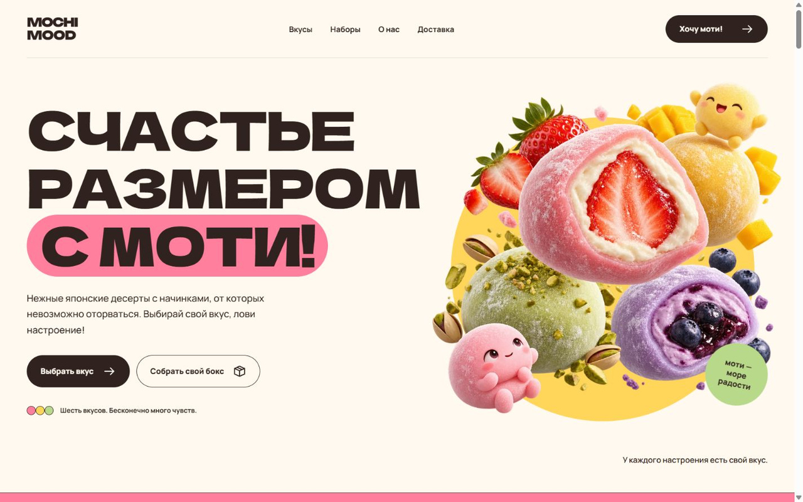
03 / ВИЗУАЛЬНЫЙ ЯЗЫК
Пастельные цвета взяты из мира десертов. Тёмный шоколадный текст удерживает контраст, а округлые формы связывают интерфейс с мягкой текстурой моти.
ЗАГОЛОВКИ / DELA GOTHIC ONE
Плотный выразительный шрифт задаёт ритм и превращает короткие фразы в самостоятельные акценты.
ОСНОВНОЙ ТЕКСТ / MANROPE
Спокойный гротеск для описаний, навигации и формы заказа. Он помогает быстро читать детали и оставляет заголовкам пространство для эмоции.
04 / КАТАЛОГ ВКУСОВ
Карточки стоят в ровной сетке. Название, начинка, цена и кнопка добавления занимают предсказуемые места — эмоциональный выбор остаётся удобным.
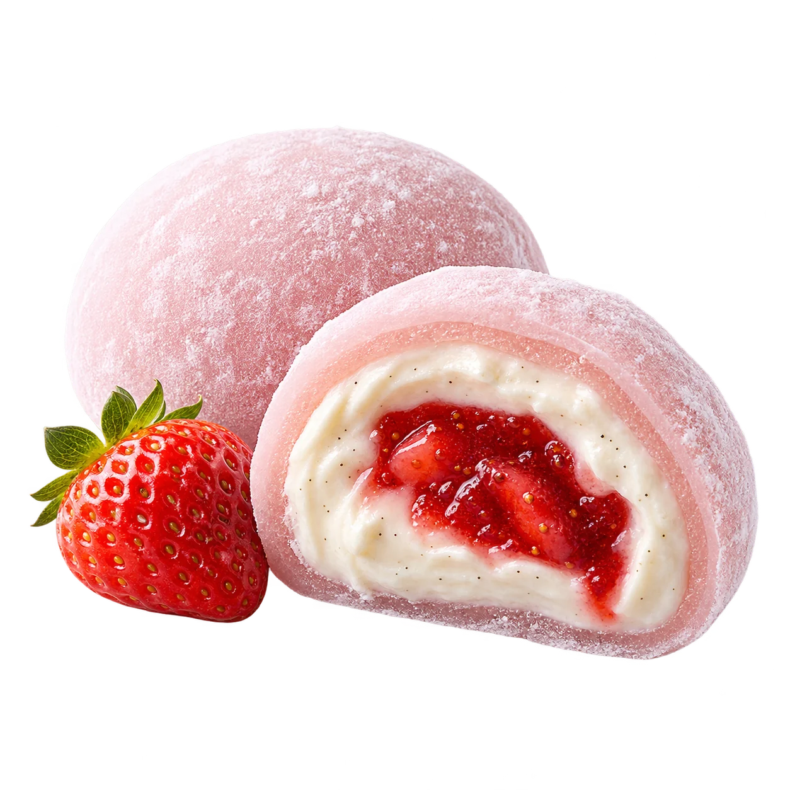
Клубника со сливками
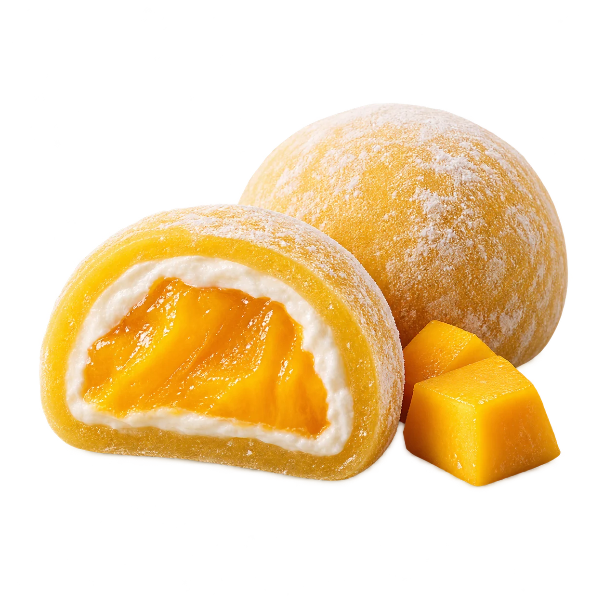
Спелое манго
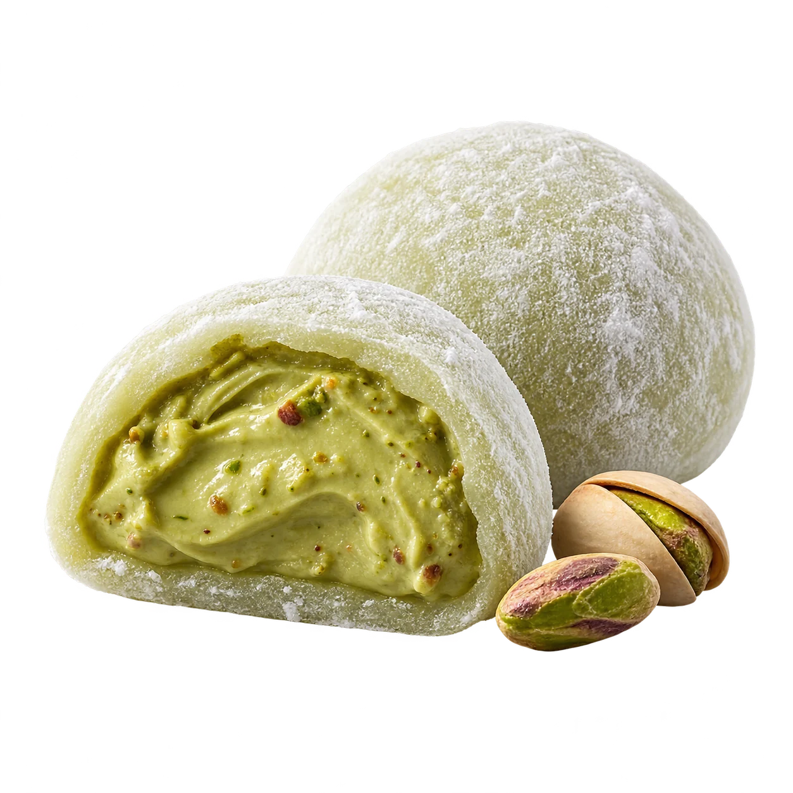
Фисташковый крем
Фрагмент визуальной системы каталога. В готовом сайте — шесть вкусов.
05 / КОНСТРУКТОР БОКСА
Пользователь выбирает размер набора и добавляет любимые вкусы. Визуальная коробка, счётчик и итоговая сумма помогают контролировать выбор без лишних переходов.
Три варианта набора: 4, 6 или 9 моти.
Количество меняется в один клик. Выбранные вкусы сразу появляются в коробке.
Кнопка оформления становится доступна, когда бокс заполнен.
06 / ШИРЕ АССОРТИМЕНТ
Дораяки, тайяки и японский чизкейк получают отдельные изображения. Так каждый десерт можно рассмотреть, прочитать его описание и сравнить стоимость.
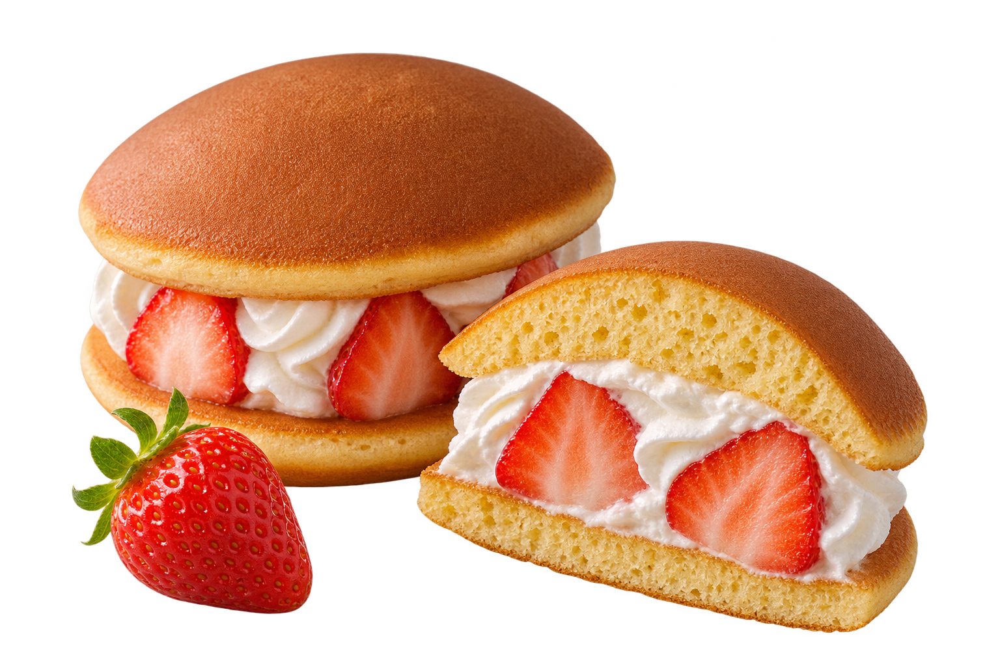
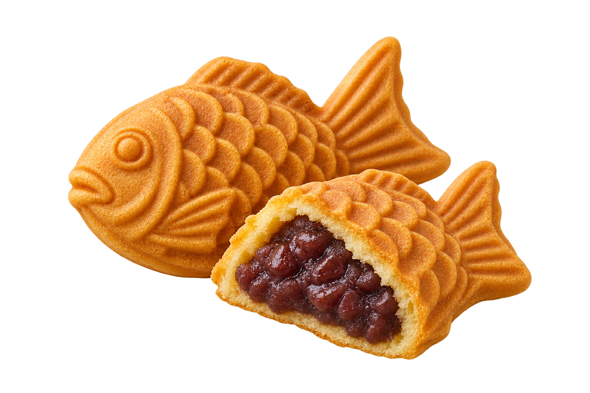
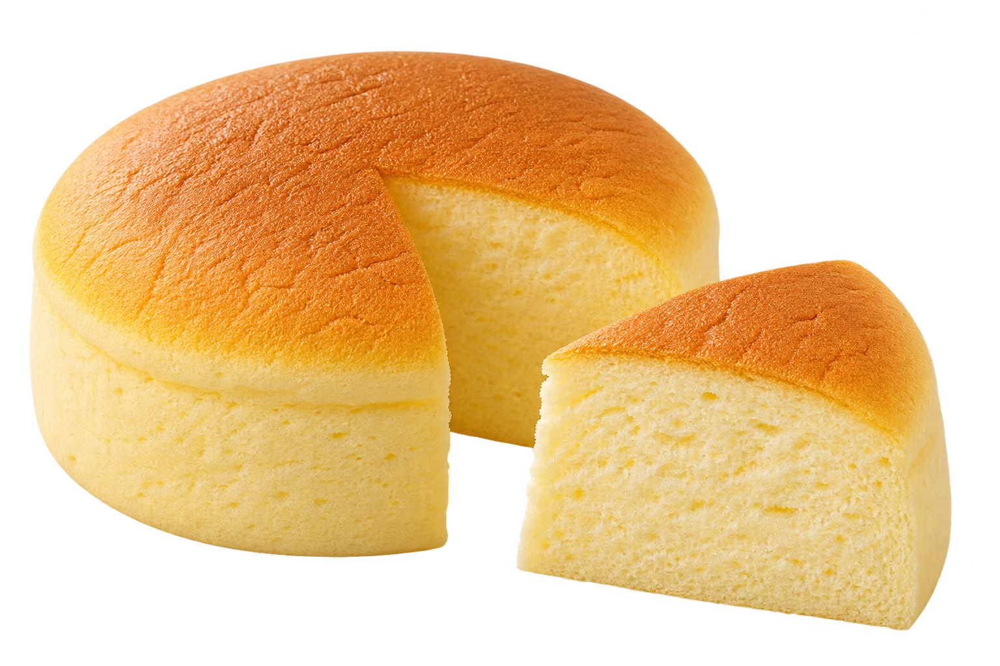
07 / ДВИЖЕНИЕ СО СМЫСЛОМ
В готовом сайте движение связано с прокруткой: блок остаётся на экране, моти плавно уходит вправо, а текст открывается для чтения. При остановке прокрутки останавливается и анимация.
МИЛЫЕ —ЖАЛКО ЕСТЬ.ВКУСНЫЕ —НЕ УСТОЯТЬ.
08 / МОБИЛЬНЫЙ ОПЫТ
На небольшом экране сохраняются крупный продукт и яркая типографика. Сетка перестраивается в одну колонку, элементы управления остаются удобными для касания.
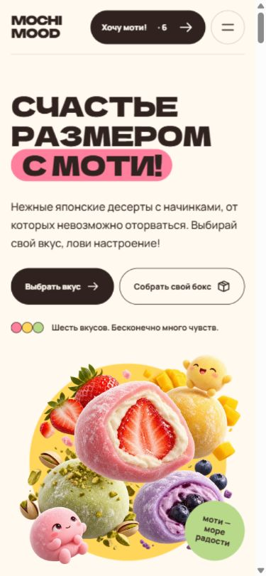
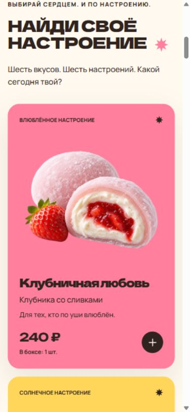
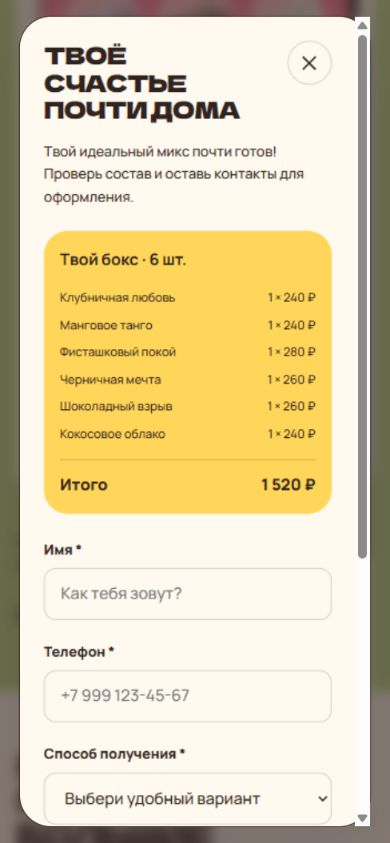
09 / ЗАВЕРШЕНИЕ СЦЕНАРИЯ
Состав, контакты и способ получения собраны в одной форме. После успешной отправки появляется номер заказа и его итоговый состав.
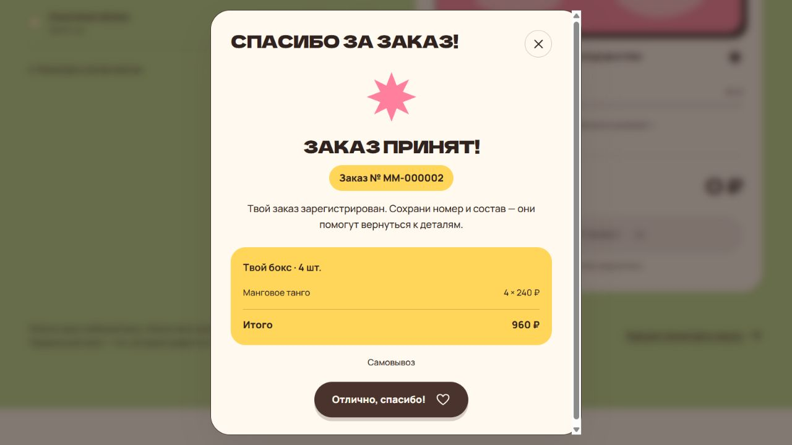
10 / РЕЗУЛЬТАТ ПРОЕКТА
Связь продукта, цвета и настроения.
Один понятный сценарий сборки набора.
От знакомства с десертом до формы заказа.
В проекте собраны визуальная система, адаптивный каталог, конструктор набора и локальное оформление заявок. Дизайн поддерживает характер продукта, а интерфейс помогает перейти от эмоции к действию.